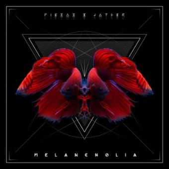

Estos pedazo de tíos han sacado muchísimos discos a lo largo de estos años, y aquí podemos ver unos cuantos:
"Melancholia" empieza sin hacer ruido con la canción que da nombre al disco, se acomoda en un rincón sobre una base lenta, sencilla y con Piezas relatando sentimientos de frustración, dolor, pena: la melancolía en sí misma. Poco a poco empieza a tomar una velocidad más rápida, explota sin miedo a opinar sobre diferentes temas y termina con una declaración de principios: «ya pasó la etapa de creerme el mejor, ahora estoy en la que sé que lo soy».
Después de que Piezas anunciara que su nuevo proyecto se llamaría "Acantilado", el MC de origen muricano especifica que se tratará de una trilogía que dará su compienzo con un primer volumen llamado "Panorámica". Este primer tomo se compondrá de 10 cortes. Este primer tomo cuenta con colaboraciones de Jaro Desperdizio, Sin-H, Alex Orellana, Dayan Soul, Dae Lacruzz y Ale Berraquero.
En 2008 aparece "Dentelladas" el primer trabajo profesional de Piezas junto a Jayder (Dj y productor). El disco se compone de nada menos que 20 cortes con colaboraciones de Madnass, Ferran MDE, Monty, Nano MC y Soriano. Las producciones corren en su mayoría a cargo de Jayder, pero también aparecen producciones de Piezas, Baghira y Dj Hem.